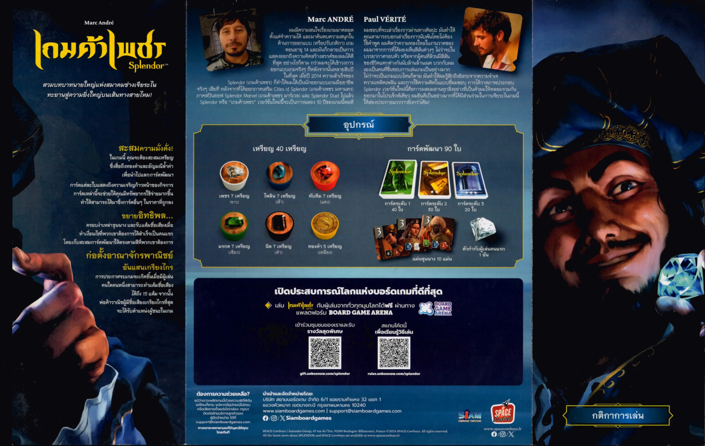
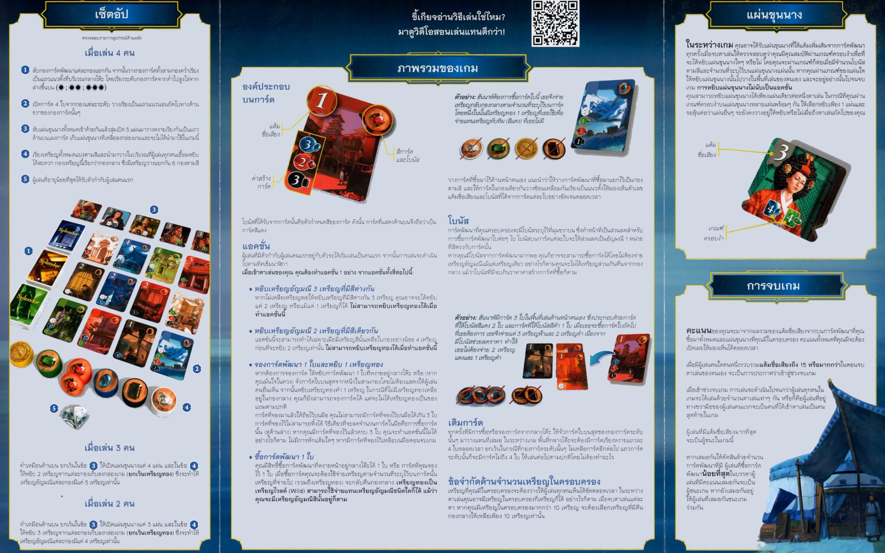

เป้าหมายของเกม
รับบทพ่อค้านายธนาคารแห่งยุคเรอเนสซองส์ สะสมเหรียญอัญมณีเพื่อซื้อการ์ดพัฒนา เมื่อการ์ดพัฒนาสะสมมากขึ้น คุณจะมี ส่วนลดถาวร ช่วยให้ซื้อการ์ดใบต่อไปถูกลงเรื่อย ๆ ผู้ที่สะสมแต้มชื่อเสียงถึง 15 แต้มและจบรอบอย่างถูกต้องจะเป็นผู้ชนะ
แกนของเกม
เก็บโทเคนให้พอ ซื้อการ์ดให้ได้ไว แล้วให้การ์ดเหล่านั้นช่วยลดต้นทุนในอนาคต
อะไรให้แต้ม
แต้มจากการ์ดพัฒนาและแผ่นขุนนางที่คุณดึงมาครอบครองได้ระหว่างเกม


จัดโต๊ะยังไง
1. แยกการ์ดพัฒนาเป็น 3 ระดับ
สับแต่ละกองแยกกัน แล้วเปิดหงายกองละ 4 ใบให้ผู้เล่นเลือกซื้อจากแถวกลาง
2. วางเหรียญตามจำนวนผู้เล่น
โดยทั่วไปใช้เหรียญสีละ 4 / 5 / 7 เหรียญตามเกม 2 / 3 / 4 คน และมีเหรียญทองสำหรับจองการ์ด
3. สุ่มแผ่นขุนนาง
วางแผ่นขุนนางให้มากกว่าจำนวนผู้เล่น 1 แผ่น เพื่อเป็นเป้าหมายโบนัสกลางเกม
4. ทุกคนเริ่มแบบมือเปล่า
ยังไม่มีส่วนลดใด ๆ ดังนั้นช่วงต้นเกมจึงเป็นการสะสมโทเคนและปั้นเครื่องยนต์ทางเศรษฐกิจของตัวเอง
4 แอคชันหลักในแต่ละตา
1. หยิบโทเคนต่างสีกัน 3 อัน
เร่งสร้างทุนตั้งต้น เหมาะมากช่วงต้นเกมเมื่อคุณยังไม่รู้ว่าจะไล่ซื้อสีไหนเป็นหลัก
2. หยิบโทเคนสีเดียวกัน 2 อัน
ทำได้เมื่อกองสีนี้เหลือพออย่างน้อย 4 อันก่อนหยิบ ใช้เร่งซื้อการ์ดใบสำคัญที่ต้องการสีเดิมเยอะ
3. จองการ์ด 1 ใบ + รับทอง 1 เหรียญ
กันไม่ให้คนอื่นซื้อการ์ดใบที่คุณเล็งไว้ และเก็บเหรียญทองมาใช้แทนสีใดก็ได้ตอนซื้อจริง
4. ซื้อการ์ดพัฒนา 1 ใบ
จ่ายโทเคนตามต้นทุน แล้ววางการ์ดไว้หน้าตัวเองเพื่อรับโบนัสถาวร และอาจได้แต้มชื่อเสียงด้วย
ระบบส่วนลดถาวร
สีที่มุมบนของการ์ดพัฒนาที่คุณซื้อไปแล้ว คือส่วนลดถาวรสำหรับการ์ดใบถัด ๆ ไป ยิ่งมีการ์ดสะสมมาก ต้นทุนจริงที่ต้องจ่ายเป็นโทเคนก็ยิ่งลดลง
นี่คือหัวใจของ Splendor: ช่วงแรกอาจดูช้า แต่เมื่อเครื่องยนต์ติดแล้วคุณจะซื้อการ์ดได้เร็วขึ้นอย่างชัดเจน
ข้อจำกัดที่ห้ามลืม
- ถือโทเคนรวมได้ไม่เกิน 10 อัน ถ้าเกินต้องเลือกคืนทันทีเมื่อจบตา
- จองการ์ดได้จำกัด โดยทั่วไปเก็บการ์ดที่จองไว้บนมือได้ไม่เกิน 3 ใบ
- เหรียญทองเป็น Wild ใช้แทนสีใดก็ได้ แต่หยิบมาจากการจองเท่านั้น
โบนัสจากขุนนาง
ถ้าจบตาของคุณแล้วมีโบนัสสีจากการ์ดพัฒนาครบตามเงื่อนไขบนแผ่นขุนนาง คุณจะได้หยิบขุนนาง 1 แผ่นมาครอบครองทันทีโดยไม่ต้องเสียแอคชัน
- ขุนนางให้แต้มชื่อเสียงทันที ช่วยเร่งเกมช่วงกลางถึงท้าย
- หยิบได้เพียง 1 แผ่นต่อ 1 ตา แม้จะผ่านเงื่อนไขหลายแผ่นพร้อมกัน
- เน้นสะสมโบนัสให้ตรงแพทเทิร์น มากกว่าไล่เก็บเหรียญแบบไม่มีทิศทาง
ทิศทางการเล่นที่เห็นผลไว
- เริ่มจากการ์ดราคาถูกเพื่อปั้นโบนัสสีพื้นฐานก่อน
- ถ้ามีการ์ดระดับสูงที่สำคัญมาก ให้จองไว้ก่อนเพื่อกันคนอื่น
- สังเกตแผ่นขุนนางตั้งแต่ต้น เพื่อรู้ว่าควรลงทุนกับสีไหนเป็นแกนหลัก
เกมจบเมื่อไร
เมื่อมีผู้เล่นคนใดคนหนึ่งแต้มชื่อเสียงถึง 15 แต้มขึ้นไป ให้เล่นจนจบรอบ เพื่อให้ทุกคนได้จำนวนตาเท่ากัน จากนั้นนับคะแนนหาผู้ชนะ
- แต้มมาจาก: การ์ดพัฒนาและแผ่นขุนนาง
- กรณีเสมอ: ใช้ผู้เล่นที่มีการ์ดพัฒนาน้อยกว่าชนะ
- จังหวะจบเกม: มักเกิดตอนที่เครื่องยนต์เริ่มซื้อการ์ดระดับสูงได้ต่อเนื่อง